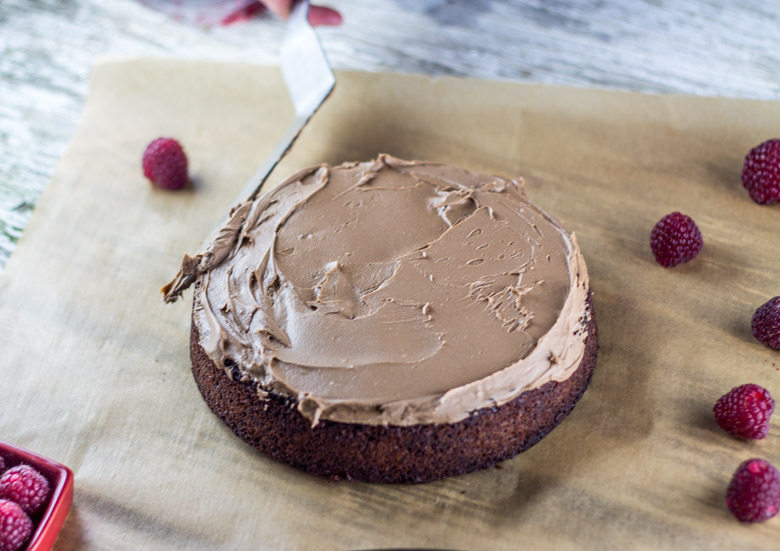
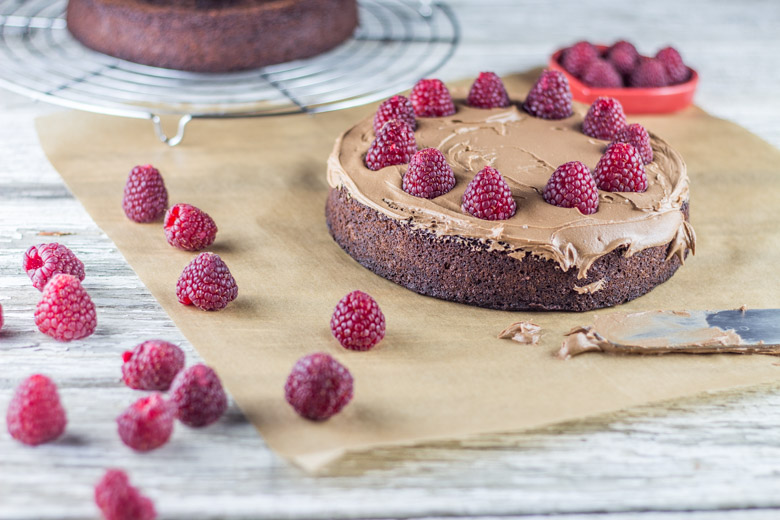
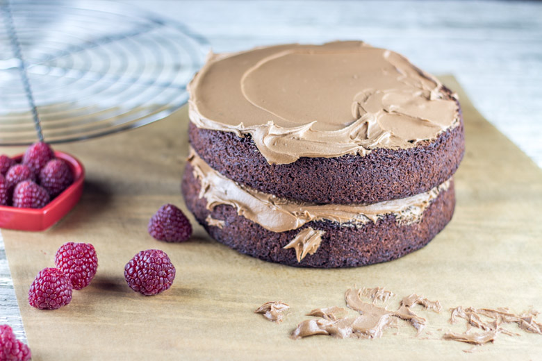
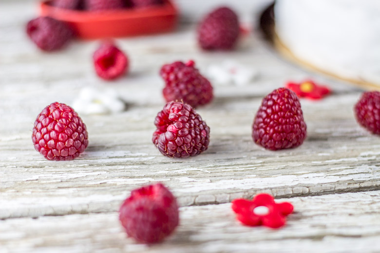
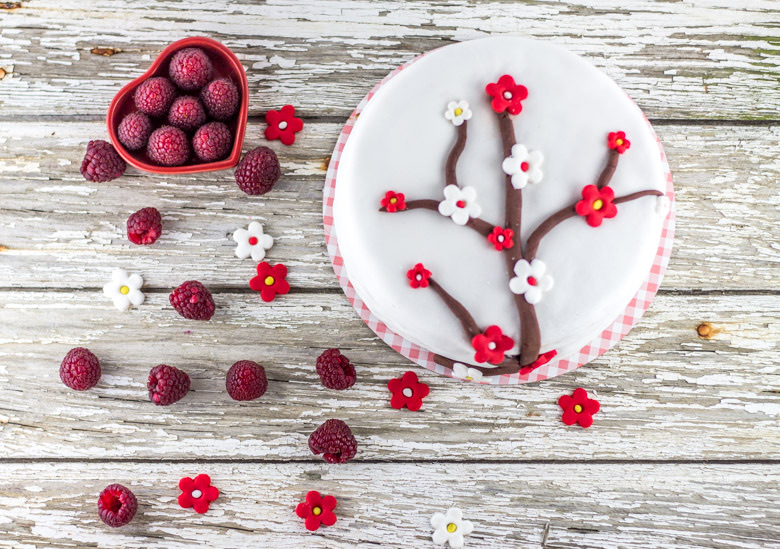

Gâteau en pâte à sucre chocolat framboise

Aujourd’hui je vous livre une recette de gâteau en pâte à sucre au chocolat et à la framboise histoire de faire le plein de gourmandise!
Cette base de gâteau est comment dire…ma préférée!!! En effet, j’ai déjà fait et refait ce gâteau en changeant à chaque fois quelque peu sa composition! Aujourd’hui, j’ai décidé de le faire ce layer cake chocolat avec des framboises, la dernière fois c’était avec des noisettes! Vous trouverez la recette en vidéo sur cet article : Layer cake chocolat noisettes sauf que cette fois j’ai décidé de le recouvrir de pâte à sucre!
Pour la petite histoire, à l’occasion du nouvel an chinois, tous les ans à l’hôpital dans lequel je travaille nous avons un médecin à la retraite qui vient nous rendre visite et partager un moment avec nous (pour ne rien vous cacher il nous tire aussi les cartes afin de nous « prédire » les bonnes ou mauvaises nouvelles qui nous attendent pour la nouvelle année)! Pour cette occasion, (et comme je ne suis pas ultra fan du nougat chinois ou du moins pas à grosses doses) j’ai décidé de lui faire un joli gâteau en pâte à sucre. Je pense d’ailleurs que c’est la dernière fois que je me lance dans un gâteau comme ça à la sortie du boulot car je vous laisse imaginer le temps qu’il m’a fallu pour le réaliser, d’autant plus que je ne suis pas une grande habituée des gâteaux en pâte à sucre!
Habituellement quand je fais ce gâteau je ne le recouvre pas de pâte à sucre alors vous pouvez tout à fait stopper la recette à l’avant dernière étape et ce sera un régal 🙂
Comme je l’avais précisé sur mon layer cake chocolat noisettes, la recette et notamment celle du glaçage est fortement inspirée du joli blog de sweetapolita! Je vous laisse découvrir la recette 😉
Ingrédients
- Chocolat noir - 130g
- Eau - 60ml
- Farine - 180g
- Levure chimique - 1càc
- Cacao en poudre non sucré - 2 càs
- Bicarbonate de sodium - 1 càc
- Sel - 1 pincée
- Beurre pommade - 125g
- Sucre semoule - 200g
- Vergeoise blonde - 70g
- Oeufs à temp ambiante - 2
- Lait - 90ml
- Framboises - 200g
- Beurre - 225g
- Sucre glace - 190g
- Extrait de vanille - 2càc
- Chocolat noir - 70g
- Nutella - 75g
- Lait - 1 càs
- Pâte à sucre blanche à lisser - 500g
- Pâte à sucre de couleur
- Sucre glace
Instructions
- Au bain marie, faire fondre le chocolat avec l'eau
- Dans un bol mélanger les ingrédients secs : farine, levure, bicarbonate, sel, cacao
- Dans le bol de votre robot (sinon à l'aide d'un batteur) mélanger le beurre le sucre et la vergeoise jusqu’à ce que le mélange blanchisse
- Ajouter les œufs un à un tout en continuant de battre
- Incorporer petit à petit le mélange contenant les ingrédients secs et mélanger afin d'obtenir un mélange homogène
- Verser le lait puis le chocolat fondu et mélanger
- Préchauffer le four à 180°
- Peser votre pâte
- Verser la moitié du mélange dans chaque moule Je mets du papier sulfurisé au fond de mes moules et je beurre bien les contours car il ne faut pas que le gâteau accroche pour avoir une belle forme ronde à la fin
- Enfourner à 180° pendant 35min (selon les fours la cuisson peut varier légèrement de quelques minutes alors n'oubliez pas de surveiller la cuisson)
- Faire fondre le chocolat avec le lait au bain marie
- Dans le bol de votre robot (sinon dans un grand saladier avec un batteur électrique ou non), battre le beurre et le sucre glace pendant 2 bonnes minutes
- Ajouter l'extrait de vanille et battre à nouveau
- Verser le chocolat fondu et mélanger
- Incorporer le Nutella et mélanger de manière à obtenir un mélange bien homogène
- Placer au frais le temps que le glaçage reprenne une consistance un peu plus épaisse
- Couvrir la première génoise de glaçage
- Déposer des framboises sur toute la surface
- Poser la deuxième génoise dessus
- Réaliser votre "crumb-coat" : afin d’éviter les miettes dans le glaçage final, déposer une fine couche de glaçage sur le dessus de la génoise du haut et l'étaler sur le layer cake à l’aide d’une spatule pour le recouvrir entièrement. Cette couche doit être la plus fine possible
- Mettre le gâteau au réfrigérateur minimum 30min afin que le glaçage durcisse
- Recouvrir généreusement de glaçage et lisser le glaçage sur le dessus et sur les côtés du gâteau à l'aide d'une spatule
- Placer au frais avant de poser la pâte à sucre
- Sur une surface propre et lisse (moi j'utilise un tapis à pâtisserie mais une table ou votre plan de travail est parfait aussi), saupoudrer d'un peu de sucre glace (ça évite que la pâte adhère à la surface)
- Malaxer la pâte à sucre entre vos mains pour la ramollir
- Étaler la pâte à sucre de manière à ce qu'elle puisse recouvrir parfaitement votre gâteau (voyez plus large pour les bords) Personnellement, je l'étale sur environ 2mm d'épaisseur mais libre à vous de laisser l'épaisseur de votre choix Utiliser un rouleau à pâtisserie en polyéthylène ou en silicone mais surtout pas en bois!
- Enrouler la pâte à sucre autour du rouleau
- La dérouler avec le plus grand soin au dessus du gâteau
- Lisser bien les bords avec vos mains pour éviter les pliures (ou avec un lisseur si vous êtes équipés)
- Découper les bords qui dépassent





Les tips de la communauté
Gâteau décorateur remarquable qui fait impression visuelle. Les commentaires portent surtout sur la beauté esthétique de la réalisation en pâte à sucre. Il ressort que la pâte à sucre demande une certaine technique pour être bien travaillée et que le résultat final justifie l'effort.
Astuces
- La pâte à sucre demande une technique particulière de lissage et de manipulation
- Travailler sur un plan bien fariné facilite la préparation
- Peut se faire à l'avance et se conserver correctement
Ajustements signalés
- du temps je n’en fait que 2 fois par ans pour mes enfants j’y passe plus d’une matinée rien que pour la déco c’est un sacré boulot j’en ai d’ailleurs fait un dernirèrement pour les 6 ans de mon fils en plublication en ce moment …..
- vraiment que je m’entraîne 🙂
- que la pâte recouvre tout le gateau. Si le gâteau fait 4cm de hauteur il faut prévoir 1kg de pâte à sucre. Pour un gâteau de 7 à 8cm environ 1,25kg (tout dépendra aussi sur quel épaisseur vous l’étaler) mais avec ces quantités ça devrait être bon 🙂 Très bonne soirée, et bon courage!!